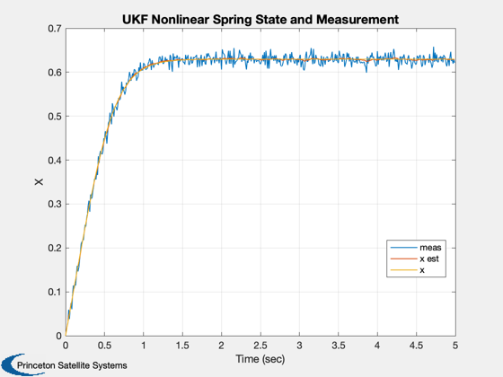
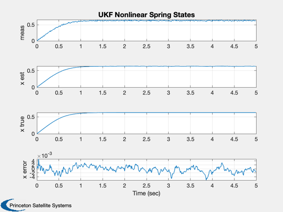
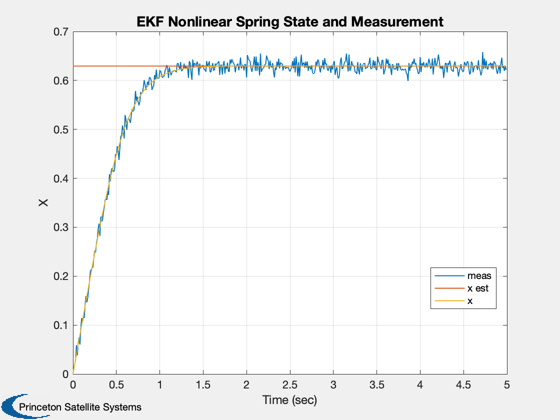
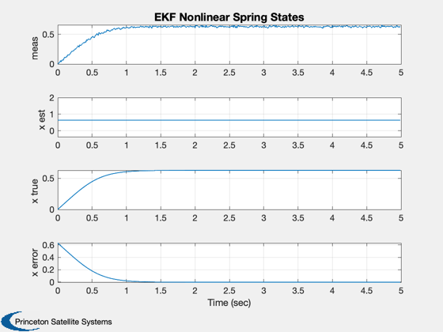

Simulate a UKF and EKF with a nonlinear spring example.
Things to try: 1. Change the noise numbers. 2. Make the spring constant different for the spring and estimator.
------------------------------------------------------------------------ See also: KFInitialize, RHSUKF, UKFWeight, RK4, GXUKF, UKFPredict, UKFUpdate, Plot2D, EKFPredict, EKFUpdate, FXNLSpring
Contents
%-------------------------------------------------------------------------- % Copyright (c) 2012 Princeton Satellite Systems, Inc. % All rights reserved. % Since version 11. %--------------------------------------------------------------------------
Simulation parameters
%---------------------- nSim = 500; dRHS = struct; dRHS.u = 1; % Step disturbance dRHS.w = 4; % Spring constant sigY = 0.01; xP = zeros(4,nSim); x = 0; dT = 0.01;
Estimation parameters
%---------------------- d = KFInitialize( 'ukf','f',@RHSUKF,'alpha',1,... 'kappa',0,'beta',2,'dT',dT,'fData',dRHS,... 'p',0.0004,'q',1e-2*sigY^2,'x',x, 'm',x); % Get the UKF weights %-------------------- d = UKFWeight( d );
UKF Simulation loop
%--------------------- y = 0; t = 0; for k = 1:nSim % Plotting %--------- xP(:,k) = [y; d.m; x; d.p]; % Update the RHS %--------------- x = RK4( @RHSUKF, x, dT, t, dRHS ); % Measurement %------------ y = x + sigY*randn; t = t + dT; % Unscented Kalman Filter %------------------------ d.t = t; d.y.data = y; d.y.param.hFun = @GXUKF; d.y.param.hData = []; d.y.param.r = sigY^2; d = UKFPredict( d ); d = UKFUpdate( d ); end
Plot the results
%----------------- t = (0:(nSim-1))*dT; Plot2D( t, xP(1:3,:), 'Time (sec)', 'X', 'UKF Nonlinear Spring State and Measurement' ); legend('meas','x est', 'x','location','best') xLbl = {'meas' 'x est' 'x true' 'x error'}; Plot2D( t, [xP(1:3,:);xP(2,:) - xP(3,:)], 'Time (sec)', xLbl, 'UKF Nonlinear Spring States' ); dEKF = KFInitialize( 'ekf','f',@RHSUKF,'dT',dT,'fData',dRHS,'h',1,'fX',@FXNLSpring,... 'p',0.0004,'q',1e-2*sigY^2,'x',x, 'm',x,'r',sigY^2); 
EKF Estimation Loop
%--------------------- for k = 1:nSim % Plotting xP([2 4],k) = [d.m; dEKF.p]; t = t + dT; % Extended Kalman Filter %----------------------- dEKF.t = t; dEKF.y = xP(1,k); dEKF = EKFPredict( dEKF ); dEKF = EKFUpdate( dEKF ); end
Plot the results
%----------------- t = (0:(nSim-1))*dT; Plot2D( t, xP(1:3,:), 'Time (sec)', 'X', 'EKF Nonlinear Spring State and Measurement' ); legend('meas','x est', 'x','location','best') xLbl = {'meas' 'x est' 'x true' 'x error'}; Plot2D( t, [xP(1:3,:);xP(2,:) - xP(3,:)], 'Time (sec)', xLbl, 'EKF Nonlinear Spring States' ); %-------------------------------------- % $Date$ % $Id: 06e9f2a2f210cce83d57081d1a244336f2a3ef7c $ 